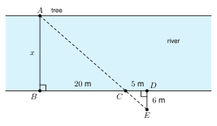

5.5 Indirect Measurement
- Use shadows to find a height
- Use a mirror to find a height
- Find a distance across a river with stakes
- Set up and solve real problems with similar triangles
Warm-Up
1. Solve 64 = h30.
2. Two right triangles each have a 35° angle. Are they similar? Say why.
3. Change 5 ft 6 in to feet.
5.5.1Shadows
- The sun is far away. Its rays are where they reach the ground.
- A person and a tree make two triangles with the same sun angle.
- The triangles are similar by .
- Keep the same kind of length in the same place: over on both sides.

5.5.2Mirrors
- A mirror reflects light so that the angle in equals the angle .
- The person and the building both stand , so each triangle has a right angle.
- The triangles are similar by .
- Use the , not the full height of the person.
5.5.3Across a River
- Put stakes B, C, and D in a line on your side of the river.
- Walk from D away from the river to E, where you see C and the tree A in . Then △ ABC and △ EDC are .
- Match the sides: ABDE = .

5.5.4Mixed Real Problems
- Read the problem and make a first.
- Decide which lengths are the . Sometimes the base is two lengths added together.
- Write the proportion, solve, and give the answer with .
A. 21.6 ft B. 40 ft C. 60 ft D. 100 ft
1. Indirect measurement uses triangles to find a length you cannot measure directly.
2. A person and a tree at the same time make similar triangles because the sun angle is the .
3. In a mirror problem, the angle in equals the angle , so the triangles are similar by AA.
4. For a river, the triangles ABC and EDC are similar, so ABDE = BCCD.
5. Always draw a and give the answer with units.
Practice
Shadows
1. A girl 5 ft tall casts a shadow 7.5 ft long. At the same time a tree casts a shadow 36 ft long. How tall is the tree?
2. A pole casts a shadow 21 ft long. At the same time a 3 ft stick casts a shadow 2 ft long. How tall is the pole?
3. Hnin is 1.6 m tall. Her shadow is 2.4 m long. A building casts a shadow 45 m long at the same time. How tall is the building?
4. A boy is 4 ft 6 in tall. His shadow is 6 ft long. A tree casts a shadow 40 ft long. How tall is the tree? Change inches to feet first.
5. A flagpole is 30 ft tall. Its shadow is 24 ft long. At the same time, a person 5 ft tall stands next to it. How long is the person's shadow?
6. A sign post 6 ft tall has a shadow 5 ft long. A building casts a shadow 90 ft long at the same time. How tall is the building?
Mirrors
7. Eye height 1.5 m. The person stands 2 m from a mirror. The building is 40 m from the mirror. How tall is the building?
8. A person with eye height 5 ft stands 3 ft from a mirror. A tree is 24 ft from the mirror on the other side. How tall is the tree?
9. Samir is 1.8 m tall. His eyes are 1.7 m above the ground. He stands 2.5 m from a mirror. The tree is 20 m from the mirror. How tall is the tree? Which of his heights do you use?
10. Explain why the two triangles in a mirror problem are similar.
Across a river. Use the stake method from 5.5.3. △ ABC ∼ △ EDC
11. BC = 30 ft, CD = 10 ft, and DE = 14 ft. Find the width AB.
12. BC = 24 m, CD = 6 m, and DE = 5 m. Find the width AB.
Mixed problems
13. A tree casts a shadow (2x + 6) ft long. The tree is (4x + 3) ft tall. At the same time a 6 ft person casts a shadow 4 ft long. Find x and the height of the tree.
14. A lamp post is 20 ft tall. Ana is 5 ft tall and stands 15 ft from the post. How long is her shadow? Let s be the length of her shadow.
15. A ramp rises 3 ft over a ground length of 36 ft. A support post stands 24 ft from the bottom, measured along the ground. How tall is the post?
16. Kofi is 4 ft tall. He stands 9 ft from a lamp. His shadow is 3 ft long. He writes 43 = H9 and gets H = 12 ft. Find his mistake. Then find the height of the lamp.
17. A 2 m stick casts a shadow 1.5 m long. How long is the shadow of a 9 m tower at the same time?
Test Practice
18. A vertical post that is 2.5 feet tall casts a shadow that is 1.5 feet long. At the same time, a vertical building casts a shadow that is 30 feet long. Which equation can you use to find the height h of the building?
A. 2.530 = h1.5
B. 2.51.5 = h30
C. 1.52.5 = h30
D. 2.5 + 1.5 = h + 30
19. Stakes B, C, and D are in a line on one side of a river. BC = 36 m, CD = 12 m, and DE = 8 m. The triangles ABC and EDC are similar. How wide is the river, AB?
A. 2.7 m
B. 16 m
C. 24 m
D. 96 m
Challenge
20. At 3:00 a 6 ft person has a shadow 9 ft long. A tree has a shadow 54 ft long. Find the height of the tree. Later the person's shadow is 12 ft long. How long is the tree's shadow then?